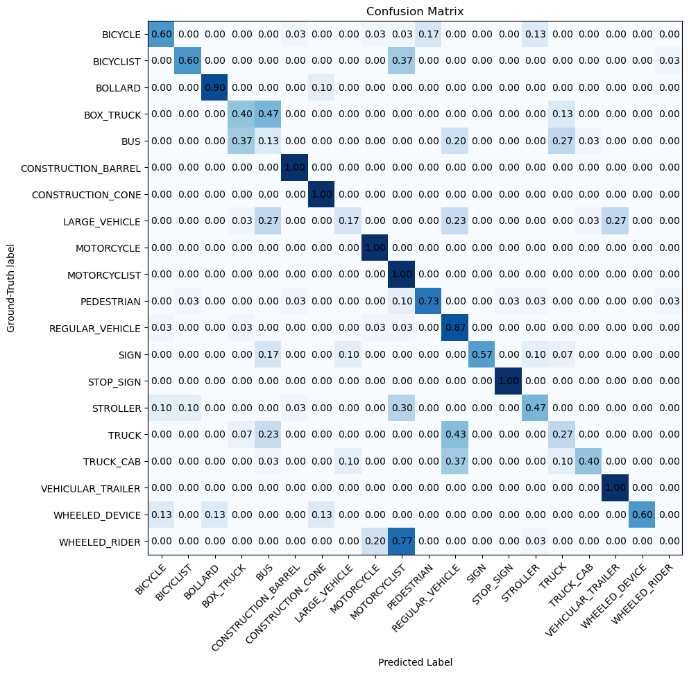

Computer vision · Georgia Tech CS 4476
Classifying self-driving lidar objects with PointNet
A self-driving car's lidar sees the world as a cloud of 3D points, not pixels. I trained a network to look at one of those point clouds and say what it is: a pedestrian, a bus, a stop sign, or one of 17 other things.
- Type
- Individual course project
- Timeline
- Fall 2024
- Data
- Argoverse 2 lidar, 20 classes
- Tools
- Python, PyTorch
The problem
Image models work on a neat grid of pixels. Lidar gives you something messier: an unordered set of points in 3D space, where the same car can show up as 30 points or 200 depending on how far away it is. A model for this data has to give the same answer no matter what order the points arrive in.
The data came from the Argoverse 2 self-driving dataset, with individual objects already cut out of full street scans: 4,000 objects across 20 classes, 3,400 for training and 600 held out for testing.
Two approaches
- Baseline: voxel grid. Chop the space around each object into small cubes, count how many points land in each cube, and feed those counts to a simple classifier. Easy, but it throws away fine detail and depends on exactly where the cube edges fall.
- PointNet. Run every point through the same small neural network, then combine all of them with a max-pool. Because max doesn't care about order, the network handles unordered points naturally, and it learns its own features from the raw coordinates.
Results
| Model | Training accuracy (last epoch) | Test accuracy (best) |
|---|---|---|
| Voxel grid baseline | 81.8% | 36.0% |
| PointNet | 88.5% | 63.5% |
20 classes, so random guessing would score 5%. Both models trained for 15 epochs, keeping the checkpoint with the best test accuracy.
PointNet nearly doubled the baseline. The baseline also shows a classic warning sign: it got better and better on the training data while its test loss kept climbing. It was memorizing which cubes were filled, not learning shapes. PointNet's training and test numbers stayed much closer together.
Where it gets confused

The mistakes make sense once you think about what lidar sees:
- Small, distinctive shapes are easy. Construction cones, barrels, stop signs, motorcycles, and trailers were classified perfectly.
- Big vehicles blur together. Only 13% of buses were labeled correctly, and they were often called box trucks. Each sample is a 4 m cube, so a bus or truck is cut off and only part of it is visible. Partial boxy shapes look alike.
- Riders get mixed up. 77% of "wheeled riders" were predicted as motorcyclists. From a few dozen points, a person on a scooter and a person on a motorcycle are nearly the same shape.
What I'd try next
The usual next step is a T-Net, a small network that learns to rotate each point cloud into a standard pose before classifying it. That should help with objects seen from odd angles. For the big vehicles, the bigger win would probably come from the data itself: larger crops, or adding lidar intensity as an input, so a truck isn't reduced to a cropped box.
CS 4476 Computer Vision, Georgia Tech, Fall 2024. Dataset: Argoverse 2 Sensor Dataset.
Course code is not shared publicly, per the Georgia Tech Honor Code.